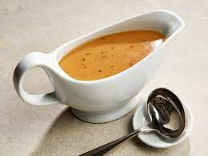

Turkey Gravy

Description
Gravy is the ultimate accompaniment to turkey, but making good gravy is more than just opening a packet and praying for succcess.
The key to any good sauce is a good base, and since our goal for a good gravy is to enhance the natural flavor of turkey, we will start by making a double stock
using turkey parts. With this stock made, all that's left is to make a quick roux and reduce to perfection.
Ingredients
- 5+ lb assorted turkey parts - you can find smoked turkey necks and tails and many grocery stores
- 4 onions, finely diced
- 4 stalks celery, finely diced
- 6 carrots, finely diced
- Fresh sage
- Salt and pepper, to taste
Steps
- Take half of the vegetables, and saute until well-browned.
- Add in half of the turkey parts, and saute them until well-browned
- Cover all ingredients with enough water to submerge them, and then cook at 15PSI in a pressure cooker for 40 minutes
- Let pressure release naturally, and strain stock through a collander to remove turkey parts and vegetables
- Repeat steps 1-3, but use stock from first round instead of water to cover ingredients - this is called a "double stock"
- Pressure cook again at 15PSI for 40 minutes
- Strain ingredients, and then filter stock through a paper towel to remove any remaining small bits of food
- Make a roux using 4 tbsp flour and 4 tbsp butter
- Once roux is made, add a small amount of stock and stir rapidly over medium heat until well-combined
- Continue to add stock to roux mixture, waiting for gravy to thicken before adding more
- Simmer over low heat, skimming scum off of gravy as needed
- Before serving, add salt and pepper to taste